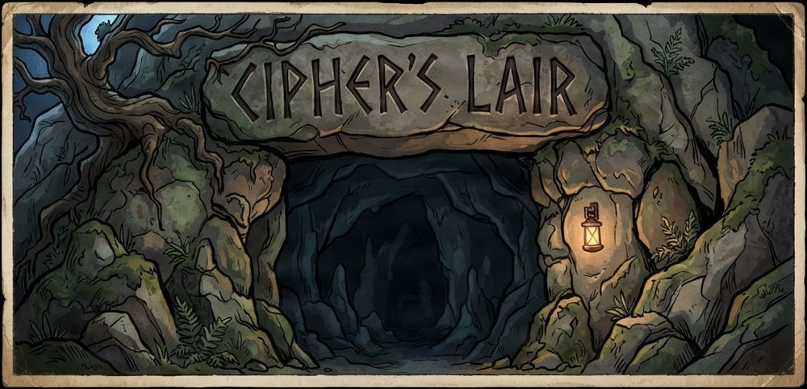

Meet Cipher, the hacker cat. Press the button and he launches 50 real attacks at this website: the OWASP Top 10 for web apps, the OWASP Top 10 for AI chatbots, and a few nasty tricks of his own. Watch Tucker's defenses stop them in real time. When the SOC's detection rules see a real attacker (not just noise), they wake the AI SOC Squirrel (a bounded Gemini AI security analyst) to investigate while the attack goes on, and code shuts the attacker down, just like a real security operations center.
Nothing here is simulated. Every attack is a real request against this live website, and every result you see is the real defense responding. The AI SOC Squirrel is monitoring the real, live server-side logs as the attack unfolds. If a defense ever fails, it shows up as "GOT THROUGH", the site owner is alerted, and your report says so. Because these are REAL attacks, only one attack run is permitted at a time, to protect the system. If Cipher is busy, you'll get a place in line and your run starts automatically when it's your turn. You get 1 attack every 24 hours. Make it Count!
All attacks are run server side, against the site itself, so no attack traffic ever leaves your network: you can't get in trouble with your company or be blocked by a security platform you may be running.
Read the code: Cipher's 50 attacks · Web server defenses · AI guardrails · SOC detection rules · AI SOC Squirrel
One run per visitor every 24 hours. Takes about 2½ minutes.
Tucker's Defense
- tucker.status = "on patrol"
Cipher's Attack
- cipher.status = "plotting"
AI SOC Squirrel
- squirrel.status = "watching the logs"